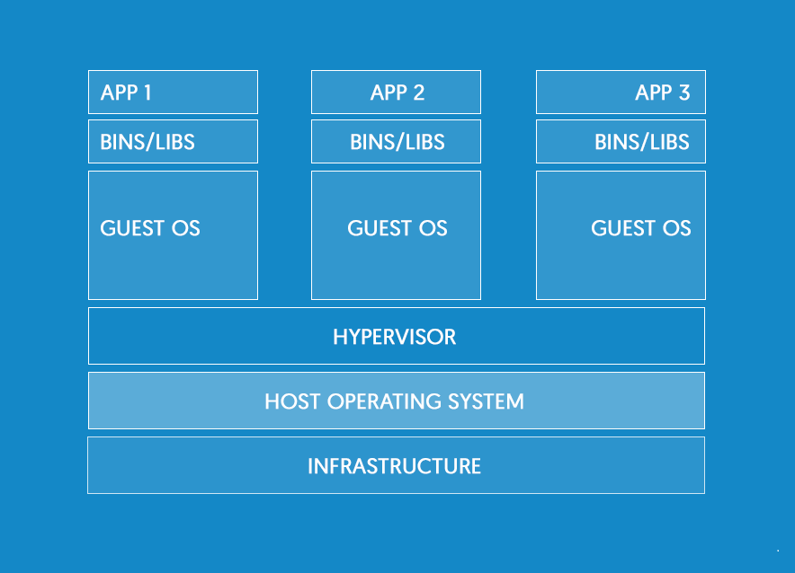
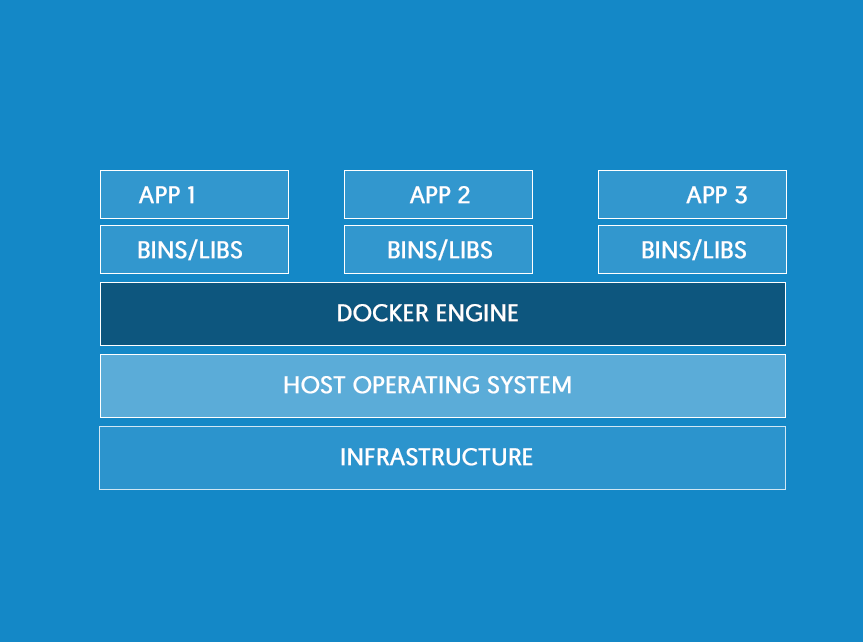

QUÉ ES DOCKER?
Capa software sobre el kernel que envuelve las funcionalidades que pemiten la contenerización
PARA QUÉ USAMOS DOCKER?
- Unificar entornos
- Facilitar tarea de despliegue
- Inmediatez a la hora de escalar
CARACTERÍSTICAS
-
Ligeros: son procesos dentro del mismo sistema operativo, arrancan de forma instantánea.
-
Abiertos: basados en estándares. Se habilitan contenedores en la mayoria de distribuciones Linux e incluso en Windows
-
Seguros: cada contenedor se ejecuta de forma aislada
Máquinas Virtuales vs Contenedores
Máquinas Virtuales
Necesario emular los sistemas operativos invitados

Contenedores
Son procesos propios del sistema operativo
0">